វត្ថុបំណង
- កំណត់បន្ទាត់ស្រប បន្ទាត់កែង
- កំណត់ទំនាក់ទំនងរវាងមុំផ្គុំដោយបន្ទាត់ពីរនិងខ្នាត់មួយ
- សង់បន្ទាត់ស្របនិងបន្ទាត់កែង ដោយប្រើកែងនិងដែកឈាន
- កំណត់មុំមានជ្រុងត្រូវគ្នាស្របរៀងគ្នានឹងមុំមានជ្រុងត្រូវគ្នា កែងរៀងគ្នា ។
1. សញ្ញាណបន្ទាត់ស្រប
ឧទាហរណ៍ 1 ៖ សសរព្រះវិហារ ផ្លូវរថភ្លើង បង្គោលភ្លើងតាមសួនច្បារ គ្រោងទ្វារ \(\displaystyle \dots\) ទាំងអស់នេះផ្តល់សញ្ញាណ “បន្ទាត់ស្រប” ។
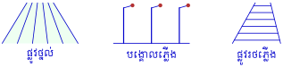
ឧទាហរណ៍ 2 ៖ បើបន្ទាត់ \(\displaystyle d\) និង \(\displaystyle d'\) នៅក្នុងប្លង់មួយគ្មានចំណុចរួមគេថា \(\displaystyle d\) និង \(\displaystyle d'\) ស្របគ្នា ។ គេកំណត់សរសេរ \(\displaystyle d \parallel d'\) ។
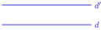
ជាទូទៅ បន្ទាត់ពីរឋិតក្នុងប្លង់តែមួយ ហើយគ្មានចំណុចរួមហៅថា បន្ទាត់ស្រប ។
បើបន្ទាត់ \(\displaystyle d\) និងបន្ទាត់ \(\displaystyle d'\) មានចំណុចរួម \(\displaystyle O\) មួយ គេថាបន្ទាត់ \(\displaystyle d\) និង \(\displaystyle d'\) មិនស្របគ្នាទេគឺប្រសព្វគ្នាត្រង់ចំណុច \(\displaystyle O\) ។ គេកំណត់សរសេរ \(\displaystyle d \cap d' = \{O\}\) ។
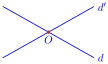
ឧទាហរណ៍ 3 ៖ ឱ្យឧទាហរណ៍បន្ទាត់ពីរស្របគ្នាដែលឋិតនៅក្នុងថ្នាក់រៀនយើង ។ ជើងតុ ជើងកៅអី សសរថ្នាក់រៀន \(\displaystyle \dots\) ។ល ។
គូសបន្ទាត់ពីរស្របគ្នា បន្ទាប់មកគូសបន្ទាត់ទី \(\displaystyle 3\) ស្របនឹងបន្ទាត់ទី \(\displaystyle 1\) ។ តើបន្ទាត់ទី \(\displaystyle 3\) ស្របនឹងបន្ទាត់ទី \(\displaystyle 2\) ឬទេ ?
តាងបន្ទាត់ \(\displaystyle d_1\) ជាបន្ទាត់ទី \(\displaystyle 1\) ហើយ \(\displaystyle d_2\) ជាបន្ទាត់ទី \(\displaystyle 2\) និង \(\displaystyle d_3\) ជាបន្ទាត់ទី \(\displaystyle 3\) ។
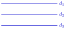
គេមាន \(\displaystyle d_1 \parallel d_2\) ហើយ \(\displaystyle d_1 \parallel d_3\) នោះគេបាន \(\displaystyle d_2 \parallel d_3\) ។
ដូចនេះ បន្ទាត់ទី \(\displaystyle 3\) ស្របនឹងបន្ទាត់ទី \(\displaystyle 2\) ។
2. សញ្ញាណបន្ទាត់កែង
ឧទាហរណ៍ 1 ៖ ផ្លូវបំបែកជាបួន ក្រឡាឈើត្រង់ បន្ទាត់កែង \(\displaystyle \dots\) ឧទាហរណ៍ទាំងអស់នេះហៅថា បន្ទាត់កែង ។
ឧទាហរណ៍ 2 ៖ បើបន្ទាត់ \(\displaystyle d\) និង \(\displaystyle d'\) នៅក្នុងប្លង់មួយមានចំណុច \(\displaystyle O\) មួយហើយផ្តុំបានមុំកែងមួយ ។ គេថា \(\displaystyle d\) និង \(\displaystyle d'\) កែងគ្នាត្រង់ \(\displaystyle O\) ។ គេកំណត់សរសេរ \(\displaystyle d \perp d'\) ។
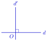
ជាទូទៅ បន្ទាត់ កន្លះបន្ទាត់ ឬអង្កត់ពីរនៅក្នុងប្លង់មួយកែងគ្នា កាលណាវាកាត់គ្នាហើយផ្តុំបានជាមុំកែងមួយ ។
គេឱ្យ \(\displaystyle Ax \perp Ay\) ហើយ \(\displaystyle \angle xAo\) មានរង្វាស់បួនដងនៃ \(\displaystyle \angle yAo\) ។ គណនារង្វាស់ \(\displaystyle \angle xAo\) ។
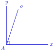
គេមាន \(\displaystyle Ax \perp Ay\) នោះ \(\displaystyle \angle xAo+\angle yAo=90^\circ\) ។ ប៉ុន្តែ \(\displaystyle \angle xAo=4\angle yAo\) ។ ជំនួសចូល ៖
ដូចនេះ \(\displaystyle \angle xAo=72^\circ\) ។
គេឱ្យ \(\displaystyle DE \perp EF\) ហើយ \(\displaystyle EG\) ជាកន្លះបន្ទាត់ពុះ \(\displaystyle \angle DEF\) ។ គណនារង្វាស់ \(\displaystyle \angle GEF\) ។
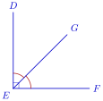
មើលចម្លើយ
ដោយ \(\displaystyle DE\perp EF\) នោះ \(\displaystyle \angle DEF=90^\circ\) ។ \(\displaystyle EG\) ពុះ \(\displaystyle \angle DEF\) ដូចនេះ
ដូចនេះ \(\displaystyle \angle GEF=45^\circ\) ។
3. លក្ខណៈនៃបន្ទាត់ស្រប
លក្ខណៈ 1 ៖ តាមចំណុច \(\displaystyle A\) មួយមិនឋិតនៅលើបន្ទាត់ \(\displaystyle d\) មួយ គេអាចគូសបានបន្ទាត់តែមួយគត់កាត់តាម \(\displaystyle A\) ហើយស្របនឹងបន្ទាត់ \(\displaystyle d\) ។
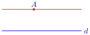
លក្ខណៈ 2 ៖ បើបន្ទាត់ពីរស្របគ្នា នោះគ្រប់បន្ទាត់ដែលកាត់បន្ទាត់មួយ ត្រូវកាត់បន្ទាត់មួយទៀត ។
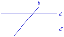
លក្ខណៈ 3 ៖ បើបន្ទាត់ពីរស្របគ្នា នោះគ្រប់បន្ទាត់ដែលស្របបន្ទាត់មួយ ត្រូវស្របបន្ទាត់មួយទៀត ។
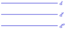
4. លក្ខណៈនៃបន្ទាត់កែង
លក្ខណៈ 1 ៖ តាមចំណុច \(\displaystyle A\) មួយមិនឋិតនៅលើបន្ទាត់ \(\displaystyle d\) មួយ គេអាចគូសបានបន្ទាត់តែមួយគត់កាត់តាម \(\displaystyle A\) ដែលកែងនឹងបន្ទាត់ \(\displaystyle d\) ។
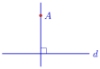
▶ មើលរូបមានចលនា៖ បន្ទាត់កែងដោយប្រើកែង
លក្ខណៈ 2 ៖ បើបន្ទាត់ពីរស្របគ្នា នោះគ្រប់បន្ទាត់ដែលកែងបន្ទាត់មួយត្រូវកែងនឹងបន្ទាត់មួយទៀត ។
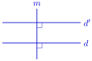
លក្ខណៈ 3 ៖ បើបន្ទាត់ពីរកែងទៅនឹងបន្ទាត់តែមួយ នោះបន្ទាត់ទាំងពីរស្របគ្នា ។
5. ការសង់បន្ទាត់ស្រប និងបន្ទាត់កែងដោយប្រើកែង និងដែកឈាន
5.1. ការសង់បន្ទាត់កែងនឹងបន្ទាត់មួយ
គេគូសបន្ទាត់មួយដែលកាត់តាមចំណុច \(\displaystyle O \in xy\) ហើយកែងនឹង \(\displaystyle xy\) ។ គេដាក់ជ្រុង \(\displaystyle AB\) នៃកែងឱ្យត្រួតលើ \(\displaystyle xy\) ហើយគេរំកិលកែងឱ្យជ្រុងមុំកែង \(\displaystyle AC\) មួយទៀតកាត់តាមចំណុច \(\displaystyle O\) រួចគេគូសជ្រុង \(\displaystyle AC\) ហើយគេបន្លាយ \(\displaystyle AC'\) គេបាន \(\displaystyle CC' \perp xy\) ហើយកាត់តាម \(\displaystyle O\) ។
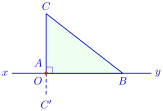
▶ មើលរូបមានចលនា៖ បន្ទាត់កែងកាត់តាមចំណុចមួយ (ដោយដែកឈាន)
5.2. ការសង់បន្ទាត់ស្របដោយប្រើកែង
គេដឹងថា បន្ទាត់ពីរផ្សេងគ្នាកែងទៅនឹងបន្ទាត់តែមួយជាបន្ទាត់ស្របគ្នា ។ តាមន័យនេះគេអាចសង់បន្ទាត់ពីរស្របគ្នា ដោយប្រើបន្ទាត់កែង ។ គេមានបន្ទាត់ \(\displaystyle xy\) មួយ គេដាក់ជ្រុងនៃកែងឱ្យត្រួតស៊ីលើបន្ទាត់ \(\displaystyle xy\) រួចគូសបន្ទាត់ \(\displaystyle d \perp xy\) ។ គេរំកិលជ្រុងនៃកែងលើបន្ទាត់ \(\displaystyle xy\) រួចគូសបន្ទាត់ \(\displaystyle d' \perp xy\) ។ ដូច្នេះគេបានបន្ទាត់ \(\displaystyle d \parallel d'\) ។ គេសង្កេតឃើញថា បើគេបន្លាយអ៊ីប៉ូតេនុសនៃកែង គេបានបន្ទាត់ពីរ \(\displaystyle L \parallel L'\) ដែរ ។
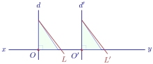
▶ មើលរូបមានចលនា៖ រំកិលកែងដើម្បីគូសបន្ទាត់ស្រប
តាមចំណុច \(\displaystyle A\) មិនឋិតនៅលើបន្ទាត់ \(\displaystyle xx'\) គូសបន្ទាត់ \(\displaystyle yy' \parallel xx'\) ។ ដំបូងគូស បន្ទាត់ \(\displaystyle d\) កាត់ឬកែង \(\displaystyle xx'\) គេដាក់កែងយ៉ាងណាឱ្យជ្រុងនៃកែងមួយត្រួតស៊ីគ្នាជាមួយបន្ទាត់ \(\displaystyle xx'\) និងជ្រុងមួយទៀតត្រួតស៊ីគ្នានឹង \(\displaystyle d\) ។ គេរំកិលកែងរហូតដល់ជ្រុងនៃកែងត្រូវគ្នានឹង \(\displaystyle d\) កាត់តាមចំណុច \(\displaystyle A\) ។ គេគូសបន្ទាត់ \(\displaystyle yy'\) គេបានបន្ទាត់ \(\displaystyle yy' \parallel xx'\) ដែលត្រូវសង់ ។
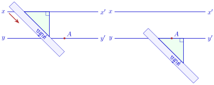
▶ មើលរូបមានចលនា៖ បន្ទាត់ស្របកាត់តាមចំណុចមួយ
- ក. គូសបន្ទាត់ \(\displaystyle d\) និងដៅចំណុច \(\displaystyle A\) មួយនៅក្រៅបន្ទាត់ \(\displaystyle d\) ។
- ខ. គូសបន្ទាត់ \(\displaystyle h\) កាត់តាមចំណុច \(\displaystyle A\) ហើយកែងបន្ទាត់ \(\displaystyle d\) ។
- គ. ដៅចំណុច \(\displaystyle B\) មួយនៅក្រៅបន្ទាត់ \(\displaystyle d\) និង \(\displaystyle h\) ។
- ឃ. គូសបន្ទាត់ \(\displaystyle k\) កាត់តាមចំណុច \(\displaystyle B\) ហើយកែងបន្ទាត់ \(\displaystyle h\) ។
- ង. តើគេថាយ៉ាងណាចំពោះ \(\displaystyle d\) និង \(\displaystyle k\) ?
ក. ខ. គ. ឃ. ជារូបខាងក្រោម ៖
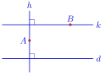
▶ មើលរូបមានចលនា៖ បន្ទាត់ស្របដោយគូសបន្ទាត់កែងពីរដង
ង. ដោយ \(\displaystyle h\perp d\) និង \(\displaystyle h\perp k\) នោះ \(\displaystyle d \parallel k\) ។
- ក. គេមានបន្ទាត់ \(\displaystyle d\) មួយ និងចំណុច \(\displaystyle A\) មិនឋិតនៅលើបន្ទាត់ \(\displaystyle d\) ។ សង់បន្ទាត់ \(\displaystyle d'\) កាត់តាម \(\displaystyle A\) ហើយកែងនឹងបន្ទាត់ \(\displaystyle d\) ដោយប្រើកែង ។
- ខ. គេមានបន្ទាត់ \(\displaystyle d\) មួយ និងចំណុច \(\displaystyle A\) មិនឋិតនៅលើបន្ទាត់ \(\displaystyle d\) ។ សង់បន្ទាត់ \(\displaystyle d'\) កាត់តាម \(\displaystyle A\) ហើយស្របនឹងបន្ទាត់ \(\displaystyle d\) ។
មើលចម្លើយ
- ក.
- ដាក់ជ្រុងមួយនៃមុំកែងរបស់កែងឱ្យត្រួតលើបន្ទាត់ \(\displaystyle d\)
- រំកិលកែងតាមបន្ទាត់ \(\displaystyle d\) រហូតដល់ជ្រុងមួយទៀតនៃមុំកែងកាត់តាមចំណុច \(\displaystyle A\)
- គូសតាមជ្រុងនោះ គេបានបន្ទាត់ \(\displaystyle d'\) ដែលកាត់តាម \(\displaystyle A\) និង \(\displaystyle d' \perp d\) ។
- ខ.
- សង់បន្ទាត់ \(\displaystyle m\) កាត់តាម \(\displaystyle A\) ហើយកែងនឹង \(\displaystyle d\) ដូចខាងលើ
- សង់បន្ទាត់ \(\displaystyle d'\) កាត់តាម \(\displaystyle A\) ហើយកែងនឹង \(\displaystyle m\) (ដាក់កែងលើ \(\displaystyle m\) ហើយរំកិលរហូតដល់កាត់តាម \(\displaystyle A\)) ។
ដោយ \(\displaystyle d \perp m\) និង \(\displaystyle d' \perp m\) នោះ \(\displaystyle d' \parallel d\) ។
6. មុំផ្គុំដោយបន្ទាត់ពីរ និងខ្នាត់មួយ
ខ្នាត់ គឺជាបន្ទាត់ដែលប្រសព្វជាមួយបន្ទាត់ពីរទៀត ក្នុងប្លង់តែមួយត្រង់ពីរចំណុចផ្សេងគ្នា ។ ផ្នែកប្លង់ដែលឋិតនៅចន្លោះបន្ទាត់ទាំងពីរហៅថា ផ្នែកខាងក្នុង និងផ្នែកនៅសល់នៃប្លង់ហៅថា ផ្នែកខាងក្រៅ ។
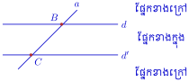
ឧទាហរណ៍ ៖ ក្នុងរូបនេះ បន្ទាត់ \(\displaystyle a\) គឺជាខ្នាត់នៃបន្ទាត់ \(\displaystyle d\) និង \(\displaystyle d'\) ។
7. មុំផ្គុំដោយបន្ទាត់ស្របពីរ និងខ្នាត់មួយ
ឧទាហរណ៍ 1 ៖ ក្នុងរូបខាងក្រោមនេះ គេមាន
- បន្ទាត់ \(\displaystyle \Delta\) ហៅថាខ្នាត់
- មុំក្នុង \(\displaystyle \angle A_1\), \(\displaystyle \angle A_2\), \(\displaystyle \angle B_7\), \(\displaystyle \angle B_8\)
- មុំក្រៅ \(\displaystyle \angle A_3\), \(\displaystyle \angle A_4\), \(\displaystyle \angle B_5\), \(\displaystyle \angle B_6\)
- មុំឆ្លាស់ក្នុង គឺគូ \(\displaystyle \angle A_2\) និង \(\displaystyle \angle B_8\), \(\displaystyle \angle A_1\) និង \(\displaystyle \angle B_7\)
- មុំឆ្លាស់ក្រៅ គឺគូ \(\displaystyle \angle A_3\) និង \(\displaystyle \angle B_5\), \(\displaystyle \angle A_4\) និង \(\displaystyle \angle B_6\)
- មុំត្រូវគ្នា គឺគូ \(\displaystyle \angle A_1\) និង \(\displaystyle \angle B_5\), \(\displaystyle \angle A_2\) និង \(\displaystyle \angle B_6\), \(\displaystyle \angle A_4\) និង \(\displaystyle \angle B_8\), \(\displaystyle \angle A_3\) និង \(\displaystyle \angle B_7\) ។
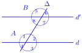
ជាទូទៅ បន្ទាត់ \(\displaystyle d\) និង \(\displaystyle d'\) ដែលកាត់ដោយខ្នាត់មួយ ផ្តុំបានមុំប្រាំបីដែលចែកចេញជាបីក្រុម គឺមុំឆ្លាស់ក្នុង មុំឆ្លាស់ក្រៅ និងមុំត្រូវគ្នា ។
- មុំឆ្លាស់ក្នុង ៖ ជាគូនៃមុំផ្គុំឡើងដោយបន្ទាត់ពីរនិងខ្នាត់មួយ ។ មុំទាំងពីរនេះត្រូវឋិតនៅផ្នែកខាងក្នុង ហើយនៅម្ខាងម្នាក់នៃខ្នាត់ និងមានកំពូលផ្សេងគ្នា ។
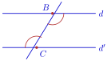
- មុំឆ្លាស់ក្រៅ ៖ ជាគូនៃមុំផ្គុំឡើងដោយបន្ទាត់ពីរ និងខ្នាត់មួយ ។ មុំទាំងពីរនេះត្រូវឋិតនៅផ្នែកខាងក្រៅ ហើយនៅម្ខាងម្នាក់នៃខ្នាត់ និងមានកំពូលផ្សេងគ្នា ។
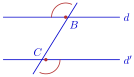
- មុំត្រូវគ្នា ៖ ជាគូនៃមុំផ្គុំឡើងដោយបន្ទាត់ពីរ និងខ្នាត់មួយ ។ មុំមួយត្រូវឋិតនៅផ្នែកខាងក្នុង និងមុំមួយទៀតត្រូវឋិតនៅផ្នែកខាងក្រៅ ហើយនៅម្ខាងនៃខ្នាត់នឹងមានកំពូលផ្សេងគ្នា ។
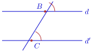
ពិនិត្យរូបខាងក្រោមនេះ រួចប្រាប់គូមុំឆ្លាស់ក្នុង មុំឆ្លាស់ក្រៅ និងមុំត្រូវគ្នា ។
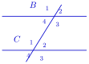
ជាទូទៅ បើបន្ទាត់ពីរស្របគ្នា ហើយកាត់ដោយខ្នាត់មួយនោះ គេបាន
- មុំត្រូវគ្នាប៉ុនគ្នា
- មុំឆ្លាស់ក្នុងប៉ុនគ្នា
- មុំឆ្លាស់ក្រៅប៉ុនគ្នា
- មុំទល់កំពូលប៉ុនគ្នា
- ផលបូកមុំក្នុងរួមខាងមានរង្វាស់ \(\displaystyle A_1+B_8=180^\circ, \ A_2+B_7=180^\circ\)
- ផលបូកមុំក្រៅរួមខាងមានរង្វាស់ \(\displaystyle A_4+B_5=180^\circ, \ A_3+B_6=180^\circ\) ។
ឧទាហរណ៍ 2 ៖ ក្នុងរូបខាងក្រោមនេះបញ្ជាក់ថា តើគូបន្ទាត់ណាស្របគ្នា? ហើយមុំណាខ្លះប៉ុនគ្នា?
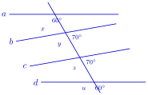
បន្ទាត់ \(\displaystyle a \parallel d\) និង \(\displaystyle c \parallel b\) ។ \(\displaystyle \angle x=\angle u\) មុំត្រូវគ្នា និង \(\displaystyle \angle y=\angle z\) មុំត្រូវគ្នា ។
លំហាត់គំរូ 1 ៖ ក្នុងរូបខាងក្រោមនេះ គេមានបន្ទាត់ \(\displaystyle a \parallel b\) កាត់ដោយខ្នាត់ \(\displaystyle m\) ។ គណនារង្វាស់ \(\displaystyle \angle 1\) និង \(\displaystyle \angle 4\) ។
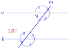
ដំណោះស្រាយ \(\displaystyle \angle 5\) និង \(\displaystyle \angle 1\) ជាមុំត្រូវគ្នា នោះគេបាន \(\displaystyle \angle 5=\angle 1\) ។ ប៉ុន្តែ \(\displaystyle \angle 5\) មានរង្វាស់ \(\displaystyle 120^\circ\) នោះ \(\displaystyle \angle 1\) រង្វាស់ \(\displaystyle 120^\circ\) ។
ដោយ \(\displaystyle \angle 1\) និង \(\displaystyle \angle 4\) ជាមុំជាប់បន្ថែម ៖
ដូចនេះ \(\displaystyle \angle 1=120^\circ\) និង \(\displaystyle \angle 4=60^\circ\) ។
លំហាត់គំរូ 2 ៖ ក្នុងរូបខាងក្រោមនេះ គេមានបន្ទាត់ \(\displaystyle a \parallel b\) កាត់ដោយខ្នាត់ \(\displaystyle t\) ។ គណនារង្វាស់មុំនីមួយៗនៃមុំទាំង \(\displaystyle 8\) ដែលផ្គុំឡើងដោយបន្ទាត់ \(\displaystyle a \parallel b\) កាត់ដោយខ្នាត់ \(\displaystyle t\) ។
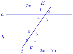
ដំណោះស្រាយ \(\displaystyle \angle E_1\) និង \(\displaystyle \angle F_7\) ជាមុំឆ្លាស់ក្រៅ នោះគេបាន
ដូច្នេះ \(\displaystyle \angle E_1=\angle F_7=7x=2x+75=105^\circ\) ។
\(\displaystyle \angle E_1=\angle F_5=105^\circ\) មុំត្រូវគ្នា ។ \(\displaystyle \angle E_3=\angle F_5=105^\circ\) មុំឆ្លាស់ក្នុង ។
គេមាន \(\displaystyle \angle E_1+\angle E_2=180^\circ\) មុំជាប់បន្ថែម នោះ
ដូច្នេះ \(\displaystyle \angle E_2=\angle F_6=75^\circ\) មុំត្រូវគ្នា ។ \(\displaystyle \angle E_4=\angle F_6=75^\circ\) មុំឆ្លាស់ក្នុង ។ \(\displaystyle \angle E_2=\angle F_8=75^\circ\) មុំឆ្លាស់ក្រៅ ។
ក្នុងរូបខាងក្រោមនេះ គេមានបន្ទាត់ \(\displaystyle a \parallel b\) ។ គណនារង្វាស់មុំ \(\displaystyle \angle x, \angle y\) ។
- ក.
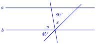
- ខ.
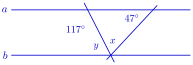
មើលចម្លើយ
- ក.
ត្រីកោណដែលមានកំពូលនៅលើ \(\displaystyle b\) មានមុំ \(\displaystyle 80^\circ\) និង \(\displaystyle 45^\circ\) (មុំទាំងពីរនេះប៉ុនគ្នានឹងមុំត្រូវគ្នា ឬមុំឆ្លាស់ក្នុងនៃមុំដែលឱ្យ ព្រោះ \(\displaystyle a \parallel b\)) ។
\[\begin{aligned} \angle x &= 180^\circ-80^\circ-45^\circ=55^\circ \\ \angle y &= 180^\circ-\angle x=180^\circ-55^\circ=125^\circ \end{aligned}\] - ខ.
ត្រីកោណដែលមានកំពូលនៅលើ \(\displaystyle b\) មានមុំ \(\displaystyle 180^\circ-117^\circ=63^\circ\) និង \(\displaystyle 47^\circ\) ត្រង់កំពូលទាំងពីរនៅលើ \(\displaystyle a\) ។ មុំនៅកំពូលដែលនៅលើ \(\displaystyle b\) គឺ \(\displaystyle \angle x\) ។
\[\begin{aligned} \angle x &= 180^\circ-63^\circ-47^\circ=70^\circ \\ \angle y &= 63^\circ \qquad (\text{មុំឆ្លាស់ក្នុងនឹងមុំ } 63^\circ \text{ នៅលើ } a) \end{aligned}\]
ដូចនេះ ក. \(\displaystyle \angle x=55^\circ,\ \angle y=125^\circ\) ខ. \(\displaystyle \angle x=70^\circ,\ \angle y=63^\circ\) ។
8. មុំមានជ្រុងត្រូវគ្នា ស្របរៀងគ្នា
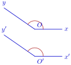
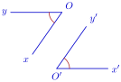
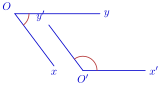
បើ \(\displaystyle Ox \parallel O'x'\) និង \(\displaystyle Oy \parallel O'y'\) នោះមុំ \(\displaystyle \angle xOy\) និង \(\displaystyle \angle x'O'y'\) ហៅថា មុំមានជ្រុងត្រូវគ្នាស្របរៀងគ្នា ។
ក្នុងករណីនីមួយៗនៃរូបខាងលើបង្ហាញថា \(\displaystyle \angle xOy=\angle x'O'y'\) ឬ \(\displaystyle \angle xOy+\angle x'O'y'=180^\circ\) ។
រូបទី 1 ៖ បន្លាយជ្រុង \(\displaystyle Ox\) កាត់ \(\displaystyle O'y'\) ត្រង់ \(\displaystyle A\) ។
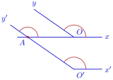
ដូច្នេះ \(\displaystyle \angle xOy=\angle x'O'y'\) ។
រូបទី 2 ៖ ភ្ជាប់ \(\displaystyle OO'\) គេបាន
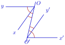
នោះ
ដូច្នេះ \(\displaystyle \angle xOy=\angle x'O'y'\) ។
រូបទី 3 ៖ បន្លាយជ្រុង \(\displaystyle Ox\) កាត់ \(\displaystyle O'y'\) ត្រង់ \(\displaystyle A\) ។
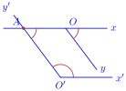
ដូច្នេះ \(\displaystyle \angle xOy+\angle x'O'y'=180^\circ\) ។
ជាទូទៅ មុំពីរដែលមានជ្រុងត្រូវគ្នាស្របរៀងគ្នាគឺ
- ជាមុំប៉ុនគ្នា កាលណាវាស្រួចទាំងពីរ ឬទាលទាំងពីរ ។
- ជាមុំបន្ថែមគ្នា កាលណាមុំមួយស្រួច មួយទាល ។
9. មុំមានជ្រុងត្រូវគ្នា កែងរៀងគ្នា
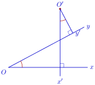
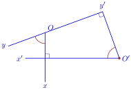
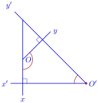
បើ \(\displaystyle Ox \perp O'x'\) និង \(\displaystyle Oy \perp O'y'\) នោះមុំ \(\displaystyle \angle xOy\) និង \(\displaystyle \angle x'O'y'\) ហៅថា មុំមានជ្រុងត្រូវគ្នាកែងរៀងគ្នា ។
ឧទាហរណ៍ ៖ ក្នុងករណីនីមួយៗនៃរូបខាងលើបង្ហាញថា \(\displaystyle \angle xOy=\angle x'O'y'\) ឬ \(\displaystyle \angle xOy+\angle x'O'y'=180^\circ\) ។
រូបទី 1 ៖ តាម \(\displaystyle O\) គូស \(\displaystyle Ot \parallel O'x'\) រួច \(\displaystyle Oy\) កាត់ \(\displaystyle O'x'\) ត្រង់ចំណុច \(\displaystyle A\) ។
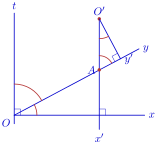
ដូច្នេះ \(\displaystyle \angle xOy=\angle x'O'y'\) ។
រូបទី 2 ៖ តាម \(\displaystyle O\) គូស \(\displaystyle Ot \parallel O'y'\) នោះគេបាន \(\displaystyle Ot \perp Oy\) រួច \(\displaystyle Ot\) កាត់ \(\displaystyle O'x'\) ត្រង់ចំណុច \(\displaystyle A\) ។
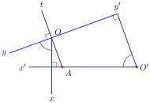
ដូច្នេះ \(\displaystyle \angle xOy=\angle x'O'y'\) ។
រូបទី 3 ៖ បន្លាយ \(\displaystyle Ox\) និង \(\displaystyle O'y'\) កាត់គ្នាត្រង់ \(\displaystyle A\) ។
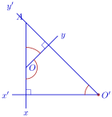
ដូច្នេះ \(\displaystyle \angle xOy+\angle x'O'y'=180^\circ\) ។
ជាទូទៅ មុំពីរមានជ្រុងត្រូវគ្នា កែងរៀងគ្នា គឺ
- ជាមុំប៉ុនគ្នា កាលណាមុំស្រួចទាំងពីរ ឬទាលទាំងពីរ ។
- ជាមុំបន្ថែមគ្នា កាលណាមុំមួយស្រួច មួយទាល ។
គេមានត្រីកោណ \(\displaystyle ABC\) ដែលមុំទាំងបីជាមុំស្រួច ហើយ \(\displaystyle H\) ជាអរតូសង់ ។ បង្ហាញថា \(\displaystyle \angle BAC+\angle BHC=180^\circ\) ។
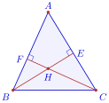
▶ មើលរូបមានចលនា៖ កម្ពស់ និងអរតូសង់
គេមាន \(\displaystyle AB\perp CH\) និង \(\displaystyle AC\perp BH\) នោះមុំ \(\displaystyle \angle BAC\) និង \(\displaystyle \angle BHC\) ជាមុំមានជ្រុងត្រូវគ្នាកែងរៀងគ្នា ។ ដោយមុំ \(\displaystyle \angle BAC\) ជាមុំស្រួចហើយ \(\displaystyle \angle BHC\) ជាមុំទាល នោះ
គេមានត្រីកោណ \(\displaystyle ABC\) ដែលមុំ \(\displaystyle B\) ជាមុំទាល ហើយ \(\displaystyle H\) ជាអរតូសង់ ។ ប្រៀបធៀបមុំ \(\displaystyle \angle BAC\) និង \(\displaystyle \angle BHC\) ។
មើលចម្លើយ
\(\displaystyle AB\perp CH\) និង \(\displaystyle AC\perp BH\) (បន្ទាត់ទាំងនេះបន្លាយកាត់គ្នាត្រង់ \(\displaystyle H\)) នោះមុំ \(\displaystyle \angle BAC\) និង \(\displaystyle \angle BHC\) ជាមុំមានជ្រុងត្រូវគ្នាកែងរៀងគ្នា ។ ដោយ \(\displaystyle B\) ជាមុំទាល នោះ \(\displaystyle \angle BAC\) និង \(\displaystyle \angle BHC\) ជាមុំស្រួចទាំងពីរ ។
ដូចនេះ \(\displaystyle \angle BAC=\angle BHC\) ។
លំហាត់
តាមរូបខាងក្រោម
- ក. រកបន្ទាត់ពីរស្របគ្នា អង្កត់ពីរស្របគ្នា និងកន្លះបន្ទាត់ពីរស្របគ្នា ។
- ខ. តើមានបន្ទាត់កាត់តាមចំណុច \(\displaystyle E\) ស្រប \(\displaystyle t\) ឬទេ ?
- គ. តើមានបន្ទាត់កាត់តាមចំណុច \(\displaystyle B\) ប៉ុន្មានស្របនឹងបន្ទាត់ \(\displaystyle t\) ?
- ឃ. តើបន្ទាត់ \(\displaystyle m\) អាចស្របបន្ទាត់ \(\displaystyle n\) ឬទេ?
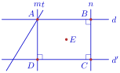
មើលដំណោះស្រាយ
តាមរូប \(\displaystyle m=AD\) និង \(\displaystyle n=BC\) កែងនឹង \(\displaystyle d'\) ។
- ក. បន្ទាត់ពីរស្របគ្នា ៖ \(\displaystyle d \parallel d'\) និង \(\displaystyle m \parallel n\) ។ អង្កត់ពីរស្របគ្នា ៖ \(\displaystyle AD \parallel BC\) ។ កន្លះបន្ទាត់ពីរស្របគ្នា ៖ \(\displaystyle DA\) និង \(\displaystyle CB\) (ទិសដៅដូចគ្នា) ។
- ខ. មាន ហើយមានតែមួយគត់ (ដោយចំណុច \(\displaystyle E\) មិនស្ថិតនៅលើ \(\displaystyle t\)) តាមស្វ័យសត្យនៃបន្ទាត់ស្រប ។
- គ. មានតែមួយគត់ តាមស្វ័យសត្យដដែល ។
- ឃ. អាច ។ ដោយ \(\displaystyle m\perp d'\) និង \(\displaystyle n\perp d'\) នោះ \(\displaystyle m \parallel n\) (បន្ទាត់ពីរកែងនឹងបន្ទាត់តែមួយ) ។
តាមរូបខាងក្រោម គេមានបន្ទាត់ \(\displaystyle \ell \parallel m\) ។ ចូរឱ្យឈ្មោះគូមុំនីមួយៗ
- ក. មុំឆ្លាស់ក្នុង
- ខ. មុំឆ្លាស់ក្រៅ
- គ. មុំត្រូវគ្នា
- ឃ. មុំក្នុងរួមខាង
- ង. មុំទល់កំពូល ។
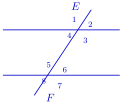
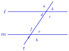
មើលដំណោះស្រាយ
រូបខាងឆ្វេង (មុំ \(\displaystyle 1,2,3,4\) ត្រង់ \(\displaystyle E\) និងមុំ \(\displaystyle 5,6,7,8\) ត្រង់ \(\displaystyle F\)) ៖
- ក. មុំឆ្លាស់ក្នុង ៖ \(\displaystyle \angle 3\) និង \(\displaystyle \angle 5\), \(\displaystyle \angle 4\) និង \(\displaystyle \angle 6\)
- ខ. មុំឆ្លាស់ក្រៅ ៖ \(\displaystyle \angle 1\) និង \(\displaystyle \angle 7\), \(\displaystyle \angle 2\) និង \(\displaystyle \angle 8\)
- គ. មុំត្រូវគ្នា ៖ \(\displaystyle \angle 1\) និង \(\displaystyle \angle 5\), \(\displaystyle \angle 2\) និង \(\displaystyle \angle 6\), \(\displaystyle \angle 3\) និង \(\displaystyle \angle 7\), \(\displaystyle \angle 4\) និង \(\displaystyle \angle 8\)
- ឃ. មុំក្នុងរួមខាង ៖ \(\displaystyle \angle 4\) និង \(\displaystyle \angle 5\), \(\displaystyle \angle 3\) និង \(\displaystyle \angle 6\)
- ង. មុំទល់កំពូល ៖ \(\displaystyle \angle 1\) និង \(\displaystyle \angle 3\), \(\displaystyle \angle 2\) និង \(\displaystyle \angle 4\), \(\displaystyle \angle 5\) និង \(\displaystyle \angle 7\), \(\displaystyle \angle 6\) និង \(\displaystyle \angle 8\)
រូបខាងស្តាំ (មុំ \(\displaystyle a,b,c,d\) ត្រង់ \(\displaystyle \ell\) និងមុំ \(\displaystyle f,e,h,g\) ត្រង់ \(\displaystyle m\)) ៖
- ក. មុំឆ្លាស់ក្នុង ៖ \(\displaystyle \angle d\) និង \(\displaystyle \angle e\), \(\displaystyle \angle c\) និង \(\displaystyle \angle f\)
- ខ. មុំឆ្លាស់ក្រៅ ៖ \(\displaystyle \angle a\) និង \(\displaystyle \angle h\), \(\displaystyle \angle b\) និង \(\displaystyle \angle g\)
- គ. មុំត្រូវគ្នា ៖ \(\displaystyle \angle a\) និង \(\displaystyle \angle f\), \(\displaystyle \angle b\) និង \(\displaystyle \angle e\), \(\displaystyle \angle c\) និង \(\displaystyle \angle h\), \(\displaystyle \angle d\) និង \(\displaystyle \angle g\)
- ឃ. មុំក្នុងរួមខាង ៖ \(\displaystyle \angle d\) និង \(\displaystyle \angle f\), \(\displaystyle \angle c\) និង \(\displaystyle \angle e\)
- ង. មុំទល់កំពូល ៖ \(\displaystyle \angle a\) និង \(\displaystyle \angle c\), \(\displaystyle \angle b\) និង \(\displaystyle \angle d\), \(\displaystyle \angle f\) និង \(\displaystyle \angle h\), \(\displaystyle \angle e\) និង \(\displaystyle \angle g\)
គេមានបន្ទាត់ \(\displaystyle a \parallel b\) ។ បង្ហាញថា \(\displaystyle \angle 1+\angle 2+\angle 3=\angle 4+\angle 2+\angle 5\) រួចគណនាផលបូកមុំ \(\displaystyle \angle 4, \angle 2, \angle 5\) ។
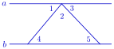
មើលដំណោះស្រាយ
ចំណុចកំពូលនៃមុំ \(\displaystyle \angle 1,\angle 2,\angle 3\) នៅលើបន្ទាត់ \(\displaystyle a\) ហើយមុំទាំងបីជាមុំជាប់គ្នាផ្គុំជាមុំរាប ដូចនេះ
\[\angle 1+\angle 2+\angle 3=180^\circ\]ដោយ \(\displaystyle a\parallel b\) ៖
\[\angle 1=\angle 4 \quad (\text{មុំឆ្លាស់ក្នុង}), \qquad \angle 3=\angle 5 \quad (\text{មុំឆ្លាស់ក្នុង})\]ជំនួសចូល ៖
\[\angle 1+\angle 2+\angle 3=\angle 4+\angle 2+\angle 5\]ដូចនេះ ផលបូកមុំ \(\displaystyle \angle 4+\angle 2+\angle 5=180^\circ\) ។
តាមរូបខាងក្រោម គេមានបន្ទាត់ \(\displaystyle a \parallel b\) ។ គណនារង្វាស់មុំ \(\displaystyle \angle x\) ។
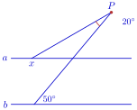
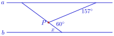
មើលដំណោះស្រាយ
រូបខាងឆ្វេង ៖ ត្រីកោណដែលមានកំពូល \(\displaystyle P\) មានមុំនៅ \(\displaystyle P\) ស្មើ \(\displaystyle 20^\circ\) ។ មុំរបស់វានៅលើបន្ទាត់ \(\displaystyle a\) ត្រង់ចំណុចដែលបន្ទាត់វែងកាត់ \(\displaystyle a\) ស្មើនឹងមុំ \(\displaystyle 50^\circ\) (មុំត្រូវគ្នា) ដូចនេះមុំខាងក្នុងត្រីកោណត្រង់ចំណុចនោះគឺ \(\displaystyle 180^\circ-50^\circ=130^\circ\) ។
\[\begin{aligned} \angle x &= 180^\circ-20^\circ-130^\circ \\ &= 30^\circ \end{aligned}\]រូបខាងស្តាំ ៖ បន្ទាត់ក្រោមពី \(\displaystyle a\) ទៅ \(\displaystyle P\) ធ្វើមុំ \(\displaystyle 157^\circ\) ជាមួយ \(\displaystyle a\) ដូចនេះមុំស្រួចរបស់វាជាមួយ \(\displaystyle a\) គឺ \(\displaystyle 180^\circ-157^\circ=23^\circ\) ។ ត្រង់ \(\displaystyle P\) មុំ \(\displaystyle 60^\circ\) ជាមុំរវាងបន្ទាត់ទាំងពីរ ។ មុំរវាងបន្ទាត់ទីពីរ និង \(\displaystyle a\) ស្មើ \(\displaystyle 60^\circ-23^\circ=37^\circ\) ហើយ \(\displaystyle \angle x\) ជាមុំឆ្លាស់ក្នុងនឹងមុំនោះ ៖
\[\angle x=60^\circ-(180^\circ-157^\circ)=60^\circ-23^\circ=37^\circ\]ដូចនេះ ក្នុងរូបឆ្វេង \(\displaystyle \angle x=30^\circ\) ហើយក្នុងរូបស្តាំ \(\displaystyle \angle x=37^\circ\) ។
តាមរូបខាងក្រោម គេបាន \(\displaystyle \angle 1+\angle 2=180^\circ\) ។ បង្ហាញថាបន្ទាត់ \(\displaystyle a \parallel b\) (ណែនាំប្រើ \(\displaystyle \angle 2+\angle 3=180^\circ\)) ។
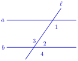
មើលដំណោះស្រាយ
\(\displaystyle \angle 2\) និង \(\displaystyle \angle 3\) ជាមុំជាប់បន្ថែមនៅលើបន្ទាត់ \(\displaystyle b\) ដូចនេះ \(\displaystyle \angle 2+\angle 3=180^\circ\) ។
គេមាន \(\displaystyle \angle 1+\angle 2=180^\circ\) នោះ
\[\angle 1+\angle 2=\angle 2+\angle 3 \implies \angle 1=\angle 3\]\(\displaystyle \angle 1\) និង \(\displaystyle \angle 3\) ជាមុំឆ្លាស់ក្នុង ហើយប៉ុនគ្នា ។ ដូចនេះ \(\displaystyle a \parallel b\) ។
គេមានត្រីកោណ \(\displaystyle ABC\) តាម \(\displaystyle B\) គេគូសកន្លះបន្ទាត់ \(\displaystyle By \parallel AC\) និងឋិតនៅតែម្ខាង \(\displaystyle AB\) ។
- ក. បង្ហាញថា \(\displaystyle \angle A=\angle ABy\) ។
- ខ. បង្ហាញថា \(\displaystyle \angle C=\angle xBy\) ដែល \(\displaystyle Bx\) ជាបន្លាយនៃ \(\displaystyle BC\) រួចទាញរកផលបូកមុំក្នុងនៃត្រីកោណ \(\displaystyle ABC\) ។
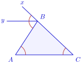
មើលដំណោះស្រាយ
កន្លះបន្ទាត់ \(\displaystyle By\) ស្របនឹង \(\displaystyle AC\) ហើយមានទិសដៅផ្ទុយនឹង \(\displaystyle AC\) ។
- ក.
\(\displaystyle \angle A\) (\(\displaystyle =\angle BAC\)) និង \(\displaystyle \angle ABy\) ជាមុំឆ្លាស់ក្នុង ដោយខ្នាត់ \(\displaystyle AB\) កាត់បន្ទាត់ស្រប \(\displaystyle AC\) និង \(\displaystyle By\) ។ ដូចនេះ
\[\angle A=\angle ABy\] - ខ.
\(\displaystyle \angle C\) (\(\displaystyle =\angle ACB\)) និង \(\displaystyle \angle xBy\) ជាមុំត្រូវគ្នា ដោយខ្នាត់ \(\displaystyle CB\) កាត់បន្ទាត់ស្រប \(\displaystyle AC\) និង \(\displaystyle By\) ។ ដូចនេះ
\[\angle C=\angle xBy\]កន្លះបន្ទាត់ \(\displaystyle Bx\), \(\displaystyle By\) និង \(\displaystyle BA\) ជាមួយ \(\displaystyle BC\) ផ្តុំមុំរាបមួយ គឺ \(\displaystyle \angle ABy+\angle ABC+\angle xBy=180^\circ\) ។ ជំនួស \(\displaystyle \angle ABy=\angle A\) និង \(\displaystyle \angle xBy=\angle C\) ៖
\[\begin{aligned} \angle A+\angle B+\angle C &= 180^\circ \end{aligned}\]ដូចនេះ ផលបូកមុំក្នុងនៃត្រីកោណ \(\displaystyle ABC\) ស្មើ \(\displaystyle 180^\circ\) ។
ខ្លឹមសារ៖ សៀវភៅពុម្ពគណិតវិទ្យាថ្នាក់ទី៧ របស់ក្រសួងអប់រំ យុវជន និងកីឡា · វាយអត្ថបទ គូររូបភាពឡើងវិញ និងរៀបចំលើអនឡាញដោយលោកគ្រូ សាន សុខលី សម្រាប់ការសិក្សាដោយឥតគិតថ្លៃ និងមិនរកប្រាក់ចំណេញ។ មិនមែនជាការបោះពុម្ពផ្លូវការរបស់ក្រសួងទេ។